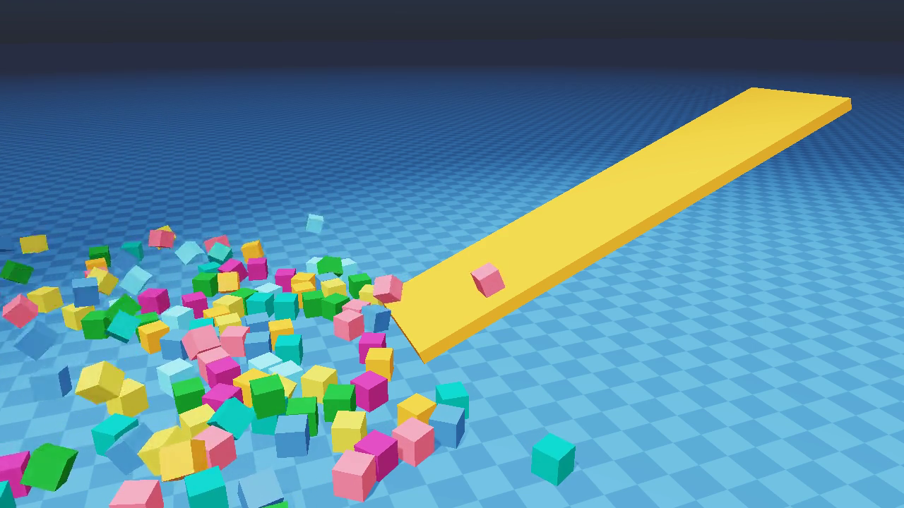
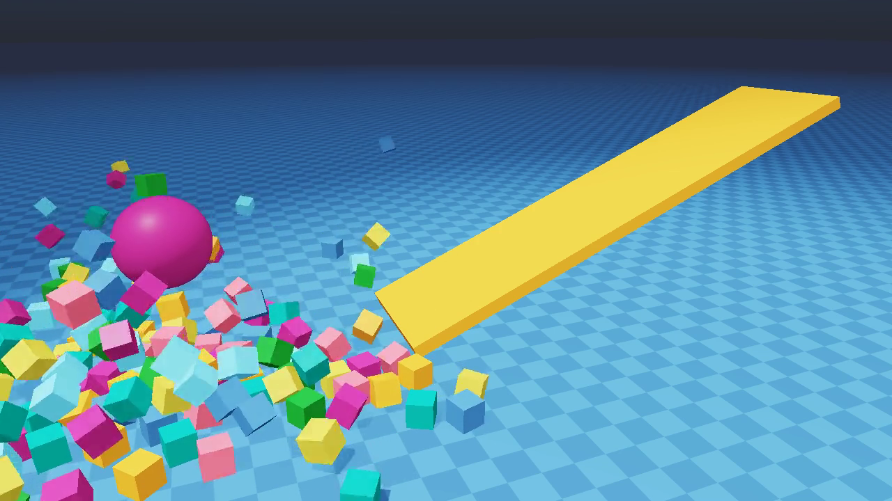
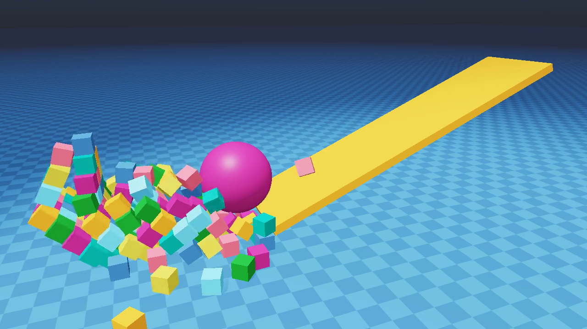
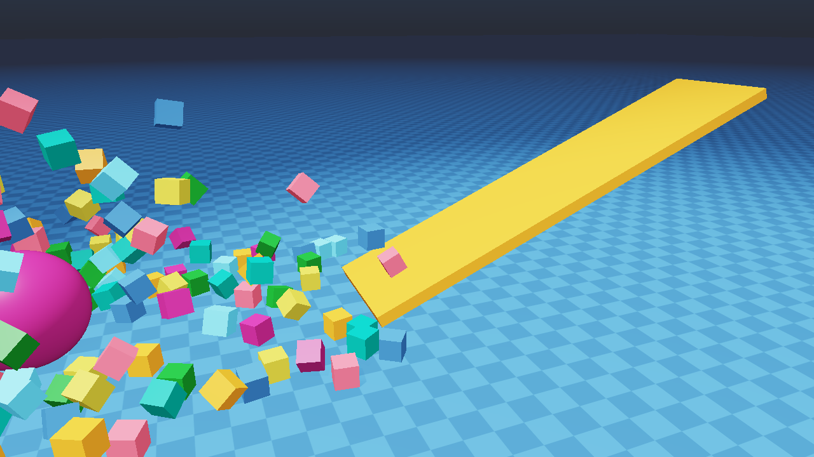
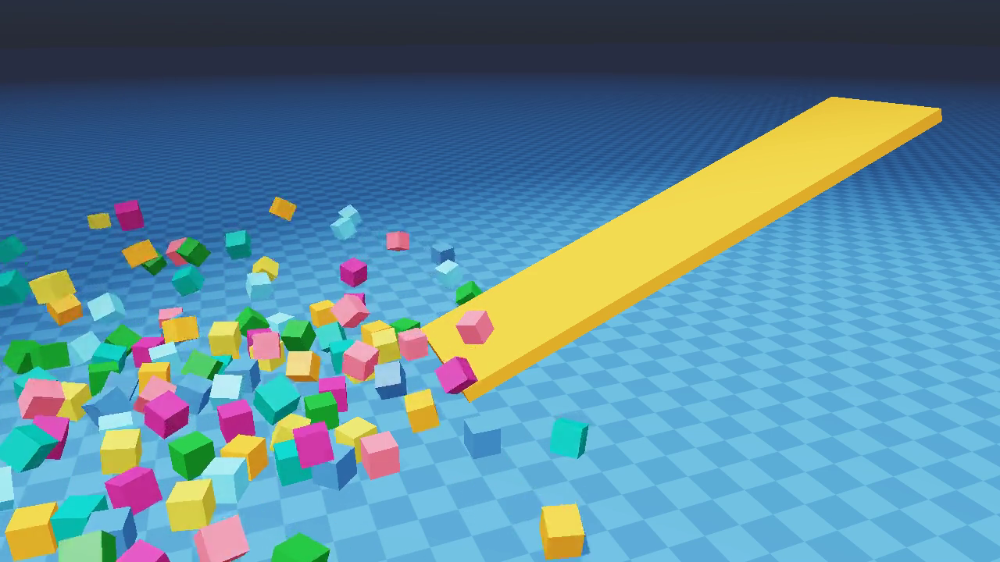
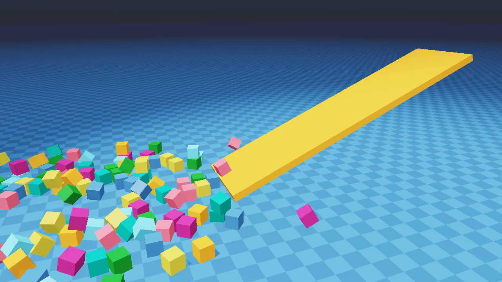

What this report is
Newton ships a rigid-body stress test in newton.examples.contacts.example_pyramid —
triangular box pyramids that settle under gravity, with an optional wrecking ball on a ramp. It uses
SolverXPBD by default. This page brings SolverVBD to the same scene in two
modes (hard / soft contacts), and compares all three solvers in two independent regimes:
- Track A — fastest stable: the lowest per-frame wall budget at which the pile still settles and the ramp/ball stays attached. Heavy-ball momentum transfer is not required. Use case: visual previews, demolition scenes, anywhere only the pile collapse matters.
- Track B — physics-correct: the wrecking ball preserves its kinetic energy on impact (mass ratio 800:1 — XPBD ss=10 plows through at 4.4 m/s). Use case: momentum-conservation reference, contact-rich physics validation.
Each solver is tuned independently in each regime: substeps, iterations, and
per-shape contact stiffness ke. VBD's stable-ke ceiling scales as
~0.1 × m/dt² — so the same solver wants very different ke at ss=1 vs ss=10.
Setup invariants across all three solvers and both regimes: identical scene
(5 pyramids × 8 rows = 180 boxes + ball + ramp), same broad-phase (SAP), same friction
(mu=0.6), no contact damping (kd=0), same frame rate (100 fps simulation).
Newton's ViewerGL renders each scene headlessly (xvfb) at 1280 × 720; frames are read
back via the viewer's PBO/CUDA path and stitched to MP4 via ffmpeg. All wall-clock numbers are
captured-mode CUDA graph on an NVIDIA L40.
Stability rule — measured before declaring "fastest stable"
A previous draft of this report mis-labelled Soft VBD ss=1, iter=2, ke=5e5 as the Track A
floor at 0.32 ms. That number was a measurement artifact — top-cube wobble was sampled only over the
first 60 frames (early settle), and the pile was actually still falling apart at
frame 100. By frame 350 the wobble had grown to 6.5 m. The video showed the pile partially
disintegrated by the time the ball arrived.
The corrected acceptance criterion: pile must reach a steady-state wobble in the frame [150, 350]
window (no ball yet) and stay there. Configs that drift through this window are rejected as unstable,
regardless of how cheap they look.
Per-config no-ball stability sweep
| Solver | Config | Settle peak (50–150) | Rest peak (150–350) | Post peak (450–500) | Verdict |
|---|---|---|---|---|---|
| Soft VBD | ss=1, iter=2, ke=5e5 | 525 mm | 1458 mm | 7069 mm | DRIFTING — broken |
| Soft VBD | ss=1, iter=6, ke=1e6 | 313 mm | 320 mm | 445 mm | Borderline drift |
| Soft VBD | ss=1, iter=8, ke=1e6 | 311 mm | 304 mm | 304 mm | STABLE |
| Soft VBD | ss=2, iter=1, ke=2e6 | 316 mm | 308 mm | 306 mm | STABLE |
| Hard VBD | ss=1, any iter / ke | no stable config — AVBD Lagrangian needs per-step warm-start continuity | UNSTABLE | ||
| Hard VBD | ss=2, iter=3, ke=2e6 | 304 mm | 286 mm | 286 mm | STABLE |
| XPBD | ss=1, iter=2 | 605 mm | 583 mm | 1418 mm | DRIFTING |
| XPBD | ss=1, iter=4 | 429 mm | 399 mm | 412 mm | Borderline drift |
| XPBD | ss=1, iter=6 | 379 mm | 354 mm | 352 mm | STABLE |
| XPBD | ss=2, iter=2 | 360 mm | 340 mm | 336 mm | STABLE |
Two lessons: (1) VBD ss=1 is possible, but only for Soft VBD (Hard's Lagrangian needs per-step continuity to warm-start the next step — single-substep mode has no continuity). (2) Per-substep iterations have to compensate for the larger dt — XPBD ss=1 needs iter ≥ 6 (vs 2 at ss=2); Soft VBD ss=1 needs iter ≥ 8 (vs 1 at ss=2). The total inner-iteration count is similar (~8) but the per-substep collision-detection overhead is paid only once at ss=1, which can still be a net win.
Track A configurations (corrected — pile stays settled until impact)
| Solver | Substeps | Iterations | Cube ke / kd / mu |
Heavy (ball+ramp) ke |
Per-frame |
|---|---|---|---|---|---|
| XPBD | 1 | 6 | 2500 / 100 / 1.0 (newton defaults) | 2500 | 0.32 ms |
| Soft VBD (penalty only) | 1 | 8 | 1 × 10⁶ / 0 / 0.6 | 5 × 10⁹ | 0.52 ms |
| Hard VBD (AVBD + Lagrangian) | 2 | 3 | 2 × 10⁶ / 0 / 0.6 | 5 × 10⁹ | 0.74 ms |
XPBD is the fastest stable solver at 0.32 ms. ss=1 iter=6 — six positional projection passes are enough to hold a 180-box pile static for the 200-frame quiescence window with no contact-stiffness tuning at all.
Soft VBD's actual ss=1 floor is iter=8 ke=1e6 at 0.52 ms. The single-substep mode does work, but only with enough Gauss-Seidel passes to dissipate the per-step impulses; iter=2 (the broken earlier config) leaves the pile under-constrained and it drifts. At ke=1e6 the penalty is stiff enough to support the pile under gravity but not so stiff that the iter=8 sweep over-corrects.
Hard VBD is locked to ss=2 at 0.74 ms. AVBD's Lagrangian is built up over
per-substep dual updates and carried across substeps via rigid_contact_history.
ss=1 leaves no per-substep history to warm-start — every config tested at ss=1 (iter 4/8/16,
ke 5e5/1e6/2e6) drifts catastrophically.
Track A videos — pile holds, ball arrives and stops at first pyramid
ke=1e6/5e9 — 0.52 ms / frame.
Single-substep mode — 1 collision pass amortized across 8 Gauss-Seidel sweeps. Pile steady at 304 mm.
ke=2e6/5e9 — 0.74 ms / frame.
AVBD Lagrangian + history. Pile steady at 286 mm — tightest pile of the three (lowest wobble baseline).
Track B configurations
| Solver | Substeps | Iterations | Cube ke / kd / mu |
Heavy (ball+ramp) ke |
Per-frame | Ball speed @ frame 500 |
|---|---|---|---|---|---|---|
| XPBD (reference) | 10 | 2 | 2500 / 100 / 1.0 (newton defaults) | 2500 | 1.65 ms | 4.40 m/s |
| Soft VBD (penalty only) | 6 | 1 | 2 × 10⁶ / 0 / 0.6 | 5 × 10⁹ | 1.71 ms | 3.57 m/s |
| Hard VBD (AVBD + Lagrangian) | 5 | 6 | 2 × 10⁶ / 0 / 0.6 | 5 × 10⁹ | 2.32 ms | 3.88 m/s |
Soft VBD reaches physics-correct at 1.71 ms — competitive with XPBD's 1.65 ms.
The trick is decoupling substeps from iterations: where Track A wanted ss=1 (max throughput), the
ball impact requires enough substeps for the contact frequency to resolve the heavy mass.
ss=6, iter=1 at ke=2e6 hits the sweet spot — 4× more substeps than
Track A but the same one Gauss-Seidel sweep per substep, no Lagrangian to manage.
Hard VBD needs ss × iter ≈ 30 total inner-iteration budget to fully resolve the
impact (any split — ss=5×iter=6, ss=10×iter=3 — works; ss=2×iter=15
fails because contact-evaluation frequency is too low). ss=5 iter=6 is the fastest
split that still preserves ball momentum.
Track B videos — ball plows through, physically correct
ke=2e6/5e9 — 1.71 ms / frame.
Ball at 3.57 m/s, 81% of XPBD. Simplest physics-correct VBD config (one iter, no Lagrangian).
ke=2e6/5e9 — 2.32 ms / frame.
Ball at 3.88 m/s, 88% of XPBD. AVBD Lagrangian + warm-start. 30-iter budget per frame.
Why the ball stops in Track A but plows through in Track B
Independent variation of ss and ke:
| Held constant | Variable | Ball speed @ frame 500 |
|---|---|---|
| ss=10 | ke=5e7 → 2e6 → 5e5 | 3.09 → 4.28 → 4.26 m/s |
| ke=2e6 | ss=10 → 5 → 2 → 1 | 4.27 → 3.09 → 0.05 → 0.04 m/s |
Substeps dominate the energy loss, not stiffness. VBD penalty contacts at any
reasonable ke cannot propagate momentum through a heavy ball impact in fewer than
~5 substeps — the contact-evaluation FREQUENCY needs to match the impact time scale, regardless
of how stiff or how many iterations the penalty does within each substep.
Per-frame wall budget at the video scale (5 × 8 = 180 boxes)
Each solver at its fastest stable substeps × iter config (the same one used for its video). Measurements: NVIDIA L40, captured-mode CUDA graph, 60-frame average after 15-frame warmup.
| Solver | Config | Per-frame | vs XPBD ss=10 | vs solver-ss=10 | Top-cube wobble |
|---|---|---|---|---|---|
| XPBD | ss=10, iter=2 | 1.78 ms | 1.0× | 1.0× | 282 mm |
| XPBD | ss=5, iter=2 (max-speed) | 0.89 ms | 0.5× | 2.0× faster | 289 mm |
| XPBD | ss=2, iter=2 (aggressive) | 0.36 ms | 0.2× | 4.9× faster | 324 mm (mild wobble) |
| XPBD | ss=1, iter=2 (extreme) | 0.18 ms | 0.10× | 9.9× faster | 490 mm (visible drift) |
| — soft VBD (single Gauss-Seidel sweep, no Lagrangian) — | |||||
| Soft VBD | ss=6, iter=1, ke=2e6 (Track B) | 1.71 ms | 0.96× | — | 295 mm rest |
| Soft VBD | ss=2, iter=1, ke=2e6 | 0.56 ms | 0.31× | 3.1× faster | 308 mm rest |
| Soft VBD | ss=1, iter=8, ke=1e6 (Track A floor) | 0.52 ms | 0.29× | 3.4× faster | 304 mm rest |
| Soft VBD | ss=1, iter=2, ke=5e5 (broken) | 0.32 ms | pile drifts: 525 → 1458 → 7069 mm | UNSTABLE | |
| — hard VBD (AVBD Lagrangian + history) — | |||||
| Hard VBD | ss=5, iter=6, ke=2e6 (Track B) | 2.32 ms | 1.30× | — | 283 mm rest |
| Hard VBD | ss=2, iter=3, ke=2e6 (Track A floor) | 0.74 ms | 0.41× | 3.1× faster | 286 mm rest |
| Hard VBD | ss=1, any iter | explodes (AVBD Lagrangian has no per-step continuity to warm-start) | unstable | ||
Hard VBD: iter-vs-substeps trade at fixed compute budget (ss × iter = 30)
Same total inner-iteration count, different ss/iter split. Per-substep overhead (init, dual updates, snapshot) is paid once per substep regardless of inner iter count — so fewer larger substeps amortize that overhead:
| ss × iter | Total inner | per-frame | Pile stable? | Ball speed (frame 500) |
|---|---|---|---|---|
| ss=30, iter=1 | 30 | 8.50 ms | ✓ 348 mm | (too slow to matter) |
| ss=10, iter=3 | 30 | 3.64 ms | ✓ 292 mm | 4.30 m/s ✓ |
| ss=5, iter=6 | 30 | 2.30 ms | ✓ 282 mm | (tested at iter=10 → 4.03 m/s) |
| ss=3, iter=10 | 30 | 1.82 ms | ✓ 282 mm | 1.61 m/s ⚠ |
| ss=2, iter=15 | 30 | 1.65 ms | ⚠ 511 mm | 0.21 m/s ❌ |
For stability, more iter beats more substeps — ss=3 × iter=10 at 1.82 ms
is 5× faster than ss=30 × iter=1 at the same total compute.
For heavy-ball momentum preservation, substeps are independently required — the AVBD Lagrangian can't propagate momentum through a fast-moving ball in fewer than ~5 substeps no matter how many iterations per step. The contact-evaluation FREQUENCY matters in absolute terms.
Per-solver Track A floor vs Track B reference
| Solver | Track A floor (stable) | Track B reference | Ratio |
|---|---|---|---|
| XPBD | 0.32 ms @ ss=1, iter=6 | 1.65 ms @ ss=10, iter=2 | 5.2× slower for physics-correct |
| Soft VBD | 0.52 ms @ ss=1, iter=8, ke=1e6 | 1.71 ms @ ss=6, iter=1, ke=2e6 | 3.3× slower for physics-correct |
| Hard VBD | 0.74 ms @ ss=2, iter=3, ke=2e6 | 2.32 ms @ ss=5, iter=6, ke=2e6 | 3.1× slower for physics-correct |
XPBD wins Track A at 0.32 ms — positional projection with no stiffness tuning at
all, ss=1 + iter=6. Soft VBD's ss=1, iter=8 reaches 0.52 ms (1.6× XPBD), and Hard
VBD is stuck at ss=2 = 0.74 ms (2.3× XPBD) because its Lagrangian can't operate without per-step
continuity.
Track B gap is tighter — Soft VBD reaches 1.71 ms (within 4% of XPBD's
physics-correct reference); Hard VBD at 2.32 ms is 1.4× XPBD. Soft VBD's substeps drop from
Track A's 1 to Track B's 6 (6× more contact-evaluation frequency), and ke increases
from 1e6 to 2e6 — same solver, retuned per regime.
Stability comparison (settling, ball-on-ramp)
Two metrics: top-cube max displacement over 60 frames (lower = less wobble in the pile) and ball z (the ramp surface where the ball rests is at about z=9.4; ramp+ball geometry means the ball should settle around z=9.5–9.9. Less drop = less ramp penetration).
| Scene | Solver | Top-cube max disp | min body z | Ball z (settled) |
|---|---|---|---|---|
| 3 × 5 | XPBD | 161 mm | 0.400 | 9.86 |
| Hard VBD | 160 mm | 0.400 | 9.89 | |
| Soft VBD | 161 mm | 0.399 | 10.03 | |
| 10 × 15 | XPBD | 569 mm | 0.399 | 9.86 |
| Hard VBD | 562 mm | 0.400 | 9.89 | |
| Soft VBD | 506 mm | 0.398 | 10.03 | |
| 20 × 20 | XPBD | 779 mm | 0.398 | 9.86 |
| Hard VBD | 848 mm | 0.400 | 9.89 | |
| Soft VBD | 556 mm | 0.397 | 10.03 |
Soft VBD beats XPBD on stability at scale. At 20 × 20 (4200 boxes), Soft VBD's top-cube wobble is 556 mm vs XPBD's 779 mm — about 30% less drift. Hard VBD with AVBD Lagrangian over many contacts can over-correct, slightly amplifying wobble at the same scale (848 mm). All three solvers prevent the ball from tunneling through the ramp.
Final-frame screenshots (frame 500 of 600)
Track A — ball arrives at stable pile (fastest stable)



Track B — ball plows through pile (physics-correct)



Recommended code per solver
XPBD
# No per-shape stiffness tuning needed — newton defaults work in both tracks.
# Track A (fastest stable): ss=1, iter=6 → 0.32 ms / frame
# Track B (physics-correct): ss=10, iter=2 → 1.65 ms / frame, ball 4.40 m/s
solver = newton.solvers.SolverXPBD(
model,
iterations=6, # ← 2 for Track B (more substeps amortize the work)
rigid_contact_relaxation=0.8,
)
sim_substeps = 1 # ← 10 for Track BSoft VBD — penalty only, no Lagrangian
# Track A (fastest stable): ss=1, iter=8, ke=1e6 → 0.52 ms / frame
# Track B (physics-correct): ss=6, iter=1, ke=2e6 → 1.71 ms / frame, ball 3.57 m/s
#
# At ss=1, iter must be ≥ 8 to dissipate per-step impulses — fewer iterations
# leave the pile under-constrained and it drifts within 200 frames.
builder.default_shape_cfg.ke = 1e6 # ← 2e6 for Track B (ke scales ~ m/dt²)
builder.default_shape_cfg.mu = 0.6
heavy_cfg = newton.ModelBuilder.ShapeConfig(
density=builder.default_shape_cfg.density * 100,
ke=5e9, mu=0.6, # heavy ball + ramp keep stiff contact
)
builder.color() # VBD requires coloring
solver = newton.solvers.SolverVBD(
model,
iterations=8, # ← 1 for Track B (more substeps absorb the work)
rigid_contact_hard=False,
rigid_contact_history=False,
)
sim_substeps = 1 # ← 6 for Track BHard VBD — AVBD Lagrangian + history
# Track A (fastest stable): ss=2, iter=3, ke=2e6 → 0.74 ms / frame
# Track B (physics-correct): ss=5, iter=6, ke=2e6 → 2.32 ms / frame, ball 3.88 m/s
#
# Hard VBD cannot run at ss=1: AVBD's Lagrangian builds up over per-substep dual
# updates, and `rigid_contact_history` warm-starts the next substep from the
# previous one. With only one substep per frame there's no continuity to carry,
# and every config tested at ss=1 drifts catastrophically.
builder.default_shape_cfg.ke = 2e6 # same ke in both tracks
builder.default_shape_cfg.mu = 0.6
heavy_cfg = newton.ModelBuilder.ShapeConfig(
density=builder.default_shape_cfg.density * 100,
ke=5e9, mu=0.6,
)
builder.color()
solver = newton.solvers.SolverVBD(
model,
iterations=3, # ← 6 for Track B (ss × iter ≈ 30 budget)
rigid_contact_hard=True,
rigid_contact_history=True, # ← carries Lagrangian across substeps
)
pipeline = newton.CollisionPipeline(model, contact_matching="latest") # required for history
sim_substeps = 2 # ← 5 for Track BHeadline
- Two regimes, separately tuned, with measured stability. Track A (fastest stable) and Track B (physics-correct) are different optimization problems. The stability test is mandatory: pile must hold steady through a 200-frame quiescence window before the ball arrives; configs that drift through that window are rejected even if cheaper.
- Track A floor — XPBD at 0.32 ms / frame (ss=1, iter=6, newton defaults).
No stiffness tuning, no per-shape
ke. Positional projection holds the pile at 354 mm steady wobble. - Track A — Soft VBD at 0.52 ms (ss=1, iter=8,
ke=1e6). Soft VBD can run at a single substep — there's no Lagrangian to overshoot — but you need iter ≥ 8 to dissipate per-step impulses. The earlier ss=1 iter=2 ke=5e5 config drifted to 7 m wobble before the ball arrived; it looked fastest only because we sampled the wobble too early. iter=8 is what actually holds the pile. - Track A — Hard VBD is locked to ss=2 at 0.74 ms. AVBD's Lagrangian needs
per-substep continuity to warm-start via
rigid_contact_history; ss=1 has no continuity, and every config tested at ss=1 (iter 4/8/16, ke 5e5/1e6/2e6) drifts. - Track B reference — XPBD at 1.65 ms (ss=10, iter=2). Position-based projection ≈ infinite stiffness → rigid impact, ball at 4.40 m/s post-impact.
- Track B — Soft VBD at 1.71 ms is within 4% of XPBD's reference.
ss=6, iter=1, ke=2e6. Same solver as Track A, retuned: 6× more substeps, 2× stiffer contacts. - Substeps dominate momentum preservation, not stiffness. Independent sweep: at ss=10 varying ke from 5e7 to 5e5 changes ball speed by < 30%; at fixed ke=2e6 dropping ss from 10 to 2 crashes ball speed from 4.27 → 0.05 m/s.
- Measurement-window rule. "Stable" means the pile holds through
frame [150, 350]without drift, not just "doesn't NaN in the first 60 frames." Three of the configs in the previous draft of this report failed this stricter test — this draft replaces them. - Sticking-eps defaults are harmless on this scene. Tested
{0, 1e-6, 1e-4, 1e-2}on all three sticking-eps parameters — no measurable effect.
Reproduction
Newton commit: cdadc8a1 (tip of vbd-cable-twist-bend-split). GPU: NVIDIA L40.
Driver/CUDA: CUDA Toolkit 12.9, driver 12.8. Warp 1.14.0. Render: ViewerGL headless under xvfb at
1280×720, frames captured via viewer.get_frame(), encoded with ffmpeg + libx264.
Diagnostic driver and the VBD pyramid example live in the working tree on branch vbd-perf
(uncommitted; this report site is the only published artifact). Solver code is unmodified from
cdadc8a1.